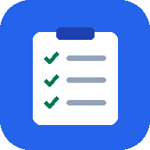

Kamu sedang offline
Halaman ini belum tersimpan di perangkat. Tugas yang pernah kamu buka tetap bisa dilihat, tapi menambah, mengubah, atau menghapus tugas butuh koneksi ke server.

Halaman ini belum tersimpan di perangkat. Tugas yang pernah kamu buka tetap bisa dilihat, tapi menambah, mengubah, atau menghapus tugas butuh koneksi ke server.